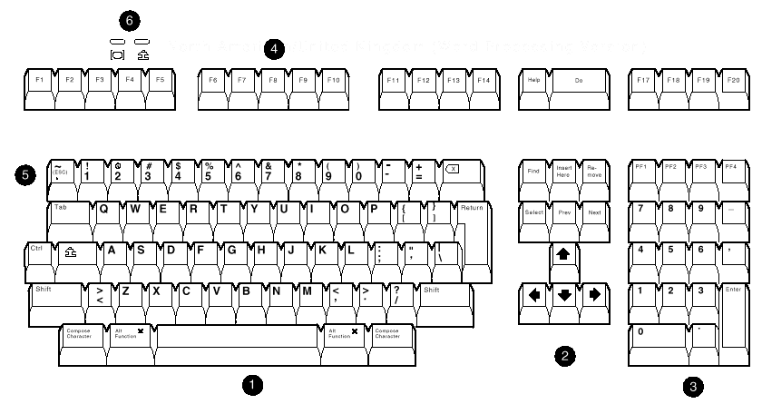
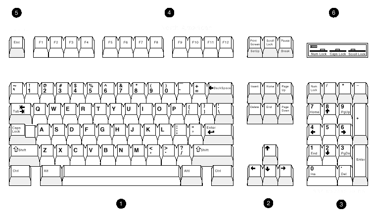

1.1 Introduction
The VT510 is a low-cost, single-session, text video terminal featuring enhanced keyboard and communications flexibility.
Three models of the product are available:
- North American
- International
- International MPR II compliant (low emissions)
All three versions have a 25-pin stacked male/female RS-232 connector (EIA-232), a 6-pin EIA-423 (MMJ) connector, and a Centronics parallel connector. These ports connect to a host or a printer.
| Feature | North American | International | Low Emission |
|---|---|---|---|
| FCC class (USA) | A | B | B |
| CSA class (Canada) | A | B | B |
| VDE compliant (Germany) | - | yes (B) | yes (B) |
| VCCI class (Japan) | - | 1 | 1 |
| MPR II compliant (Sweden) | no | no | yes |
| User-adjustable centering | yes | yes | yes |
| User-adjustable rotation | no | yes | yes |
| National keyboard languages | 5 | 27 | 27 |
| Power cord | fixed | detachable | detachable |
1.2 Communications Features
The terminal provides:
- Two bidirectional, asynchronous serial communication ports for host and local printer
- Baud rates from 300 to 115.2K baud
- Centronics parallel printer port
- 25-pin serial connector
- Expanded flow control options:
- Software flow control using XON/XOFF or XPC
- Hardware flow control using DTR/DSR
1.3 Keyboard Features
The VT510 offers a choice of two keyboard layouts—a VT keyboard layout (LK450) or an enhanced PC keyboard layout (PCXAL). The VT keyboard (Figure 1–1) and the PC keyboard (Figure 1–2) differ in the placement of some of the keys, like the arrow keys. A VT keyboard has 20 function keys, F1 through F20, above the main keypad, while a PC keyboard has 12 function keys, F1 through F12.
 |
 |
(1) Main keypad, (2) Editing keypad, (3) Numeric keypad, |
The keyboard has the following features:
- An IBM PS/2 6-pin mini DIN connector.
- Keyboard keys that can be reprogrammed to send single characters, to send character sequences, or to invoke local functions (Hold, Copy and Paste, Remove, Insert, Print Page, Toggle Autoprint, Set-Up, Break, and so on).
- A local user-defined key editor. Key definitions can be saved in nonvolatile memory.
- Eight levels of user-defined function keys: Unshifted, Shifted, Control, Shift Control, Alt, Alt/Shift, Alt/Control and Alt/Shift/Control.
- 804 bytes of nonvolatile memory available for custom user-defined keys (UDKs). The maximum length for a UDK definition is 255 bytes.
1.4 Printer Port Features
The terminal has the following printer port features:
- A Centronics parallel printer port.
- IBM ProPrinter support.
- Bidirectional serial communication ports (male and female).
- Baud rates from 300 to 115.2K baud.
- Null characters that can pass as data to the printer port.
1.5 Display and Text Capabilities
The terminal has both ANSI and ASCII display and text processing capabilities. The features of each are listed below.
1.5.1 ANSI
- Macro capability
- Display: 26, 42, or 53 data lines
- Selectable page size: 24, 25, 36, 42, 48, 50, or 72 lines
- Full status line (occupies one data line)
- Separate keyboard indicator line
- Three pages of 24 lines
- SCO Console mode
1.5.2 ASCII
Terminal emulations:
WYSE: 50+, 60 native, 160 text only, 120, 150, PCTerm
Televideo: TVI 950, 925, 910+
Applied Digital Data Systems: ADDS A2- Dim and invisible character attributes
1.6 Enhanced Set-Up
The terminal provides an enhanced menu-based Set-Up, allowing common features to be accessed easily from a single screen. All Set-Up features are host controllable to allow remote configuration. The terminal also has a means to lock out the local setup.
Set-Up menus are available in English, French, German, Italian, or Spanish. For details, see Chapter 2, Terminal Set-Up.
1.7 Desktop Productivity Features
The terminal has the following desktop productivity features:
- Local copy and paste (not available in PCTerm mode)
- Time of day clock (host or locally set, no battery back up)
- Desktop calculator with decimal, octal, and hex conversions
- Display character set tables
For details, see Chapter 3, Desktop Features.
1.8 Character Set Support
In addition to the traditional Digital graphic character sets (DEC Multinational, NRCS, and so on), the VT510 supports Cyrillic, Greek, Hebrew, Turkish, most Eastern European languages, and PC character sets. For details, see Chapter 7, Character Sets.
1.9 Ergonomics (Human Factors) Features
The terminal is designed to provide a high-quality human interface and long-term reliability at low cost. The VT510 offers 72 Hz refresh, full overscan, or both at slightly reduced resolution. The terminal has the following features:
- 35.5 cm (14 in) flat face, antiglare CRT screen
- Improved resolution of 800 × 432 pixels
- 72 Hz refresh
- Overscan (see Table 1–2)
- Additional fonts (see Table 1–3)
- Tilt/swivel base
- Choice of keyboards
- Accessibility aids
| Refresh Rate | Lines per Screen | Overscan Available |
|---|---|---|
| 72 Hz | 24/25/26 | yes |
| 72 Hz | 36/42 or 48/50/53 | no |
| 60 Hz | all | yes |
| 80 Columns | 132 Columns | Maximum Number of Lines |
|---|---|---|
| 10 × 16 | 6 × 16 | 26 lines + keyboard indicator line |
| 10 × 10 | 6 × 10 | 42 lines + keyboard indicator line |
| 10 × 8 | 6× 8 | 53 lines + keyboard indicator line |
| 10 × 13 | 6 × 13 | 26 lines + keyboard indicator line (72 Hz with overscan) |
1.10 Field-Upgradable Firmware
All VT510 models include support for a 4 Mbit (512 KByte) ROM cartridge option. The base unit comes with a factory-installed ROM. The ROM cartridge connector is protected by a ROM cartridge cover. To install new code, the ROM cartridge cover is removed, and a ROM cartridge with attached cover is plugged into the ROM connector. The new code completely supersedes the factory-installed ROM code. It does not overlay or extend the factory code.
If you service the terminal with a ROM cartridge installed, remove and save the ROM cartridge to put it on the new terminal.
1.11 PCTerm Mode
PCTerm mode is designed to allow the terminal to emulate the console of an industry-standard PC.
A separate character set selection is used for PCTerm mode. This selection is controlled by the PCTerm character set selection in Set-Up and the DECPCTERM control function. Changing this selection does not affect the VT character set selection.
1.12 Comparison with Other ANSI Products
The VT510 is functionally compatible with other ANSI products with the following exceptions:
Terminal ID
The Primary Device Attributes can report additional extensions to cover new features. See Chapter 4 for a summary of the control functions. The Secondary Device Attributes are different.
VT510 CSI > 61 ; Pv ; 0 cWhere Pv is the firmware version number.
Dynamically Redefinable Character Set (DRCS) Fonts
The VT510 has four buffers, which can load up to two dynamically redefinable character sets, each with an 80-column font and a 132-column font.
Keyboards
DEC LK401 and compatible keyboards cannot be used on the VT510; however, the VT510 can emulate other keyboards when configured accordingly.
Single Session
The VT510 is a single-session terminal.
PC Character Sets
PC character sets are available in SCO Console mode, and they do not require the keyboard to send scancodes, as PCTerm mode does.